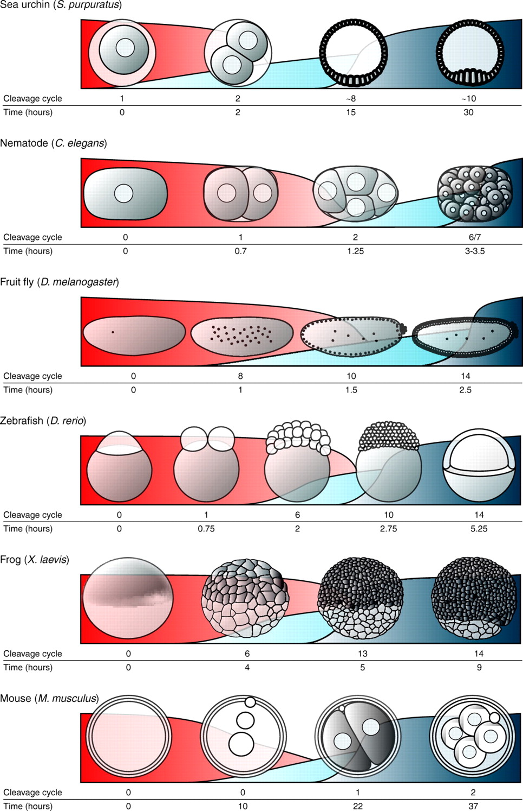
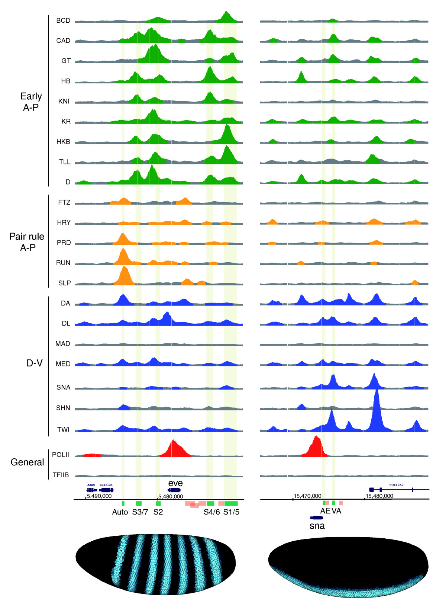
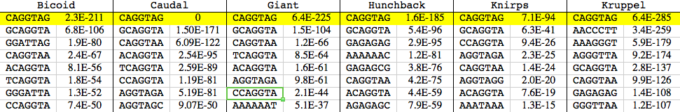
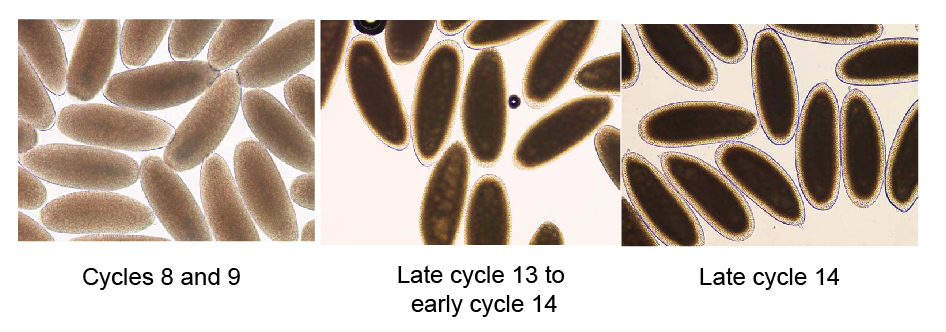
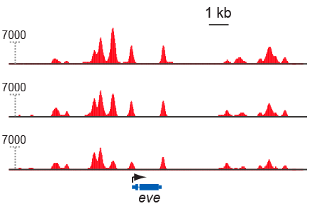
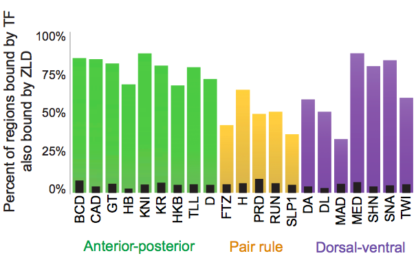
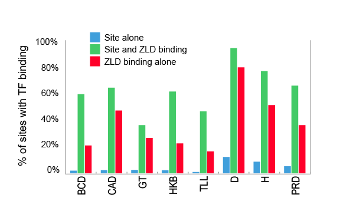
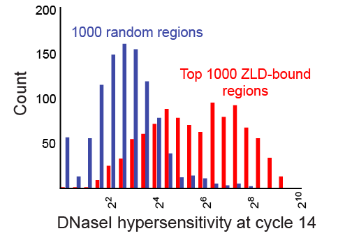
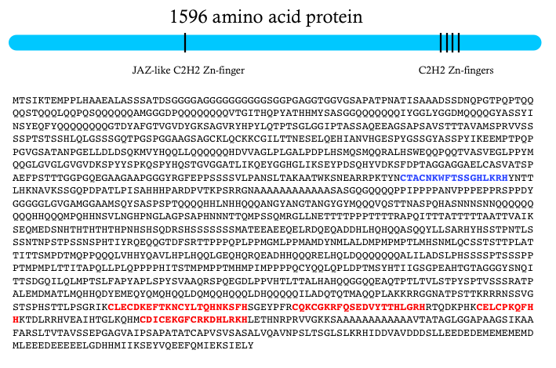
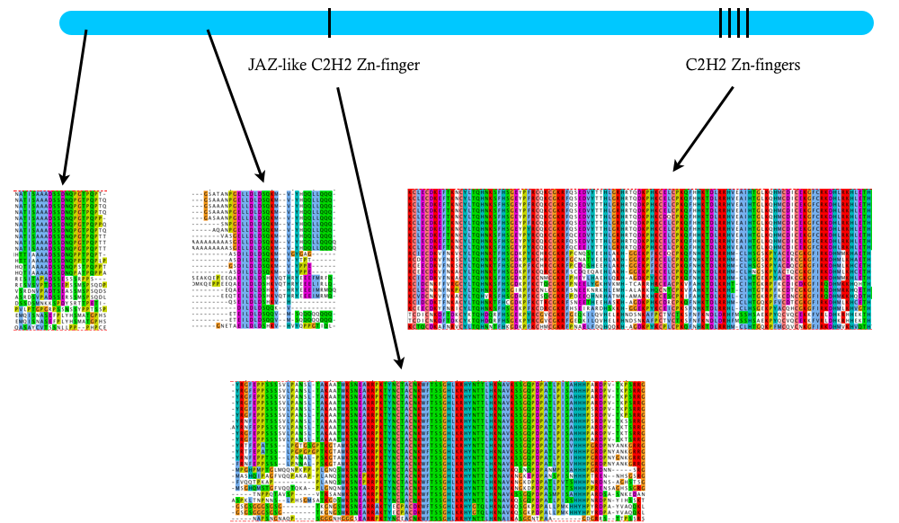

PLoS Genetics just published a paper from my lab describing our analysis of the binding and activity of a remarkable protein, known as Zelda, that appears to be a master regulator of genome activation in the earliest stages of Drosophila development, and thereby plays a major role in shaping the form and function of the mature animal.
Virtually all animals begin life as a fertilized egg with a single copy of its diploid genome. In the earliest stages of development, the zygotic genome is generally inactive, with the embryo’s molecular processes being driven by proteins, RNAs and other substances packed into the egg by the mother. But at point ranging from a few hours to a few days after fertilization (depending on the species), the zygotic genome is activated, maternal proteins and RNAs are degraded, and the embryo takes control of its own fate (Tadros and Lipshitz , 2009 is an excellent review on the topic). It’s the functional equivalent of embryonic adolescence – at first the mother is in control of everything, the embryo makes some early, halting steps towards independence, and then, as a teenager, it breaks free completely.
Although the transition from maternal to zygotic control of embryonic development (known, aptly, as the maternal-to-zygotic transition or MZT) is a critical developmental milestone an all animals, including humans, relatively little is known about the molecular events that govern the handoff from mother’s influence to an animal’s own genome. Our new paper suggests that Zelda not only plays a major role in triggering this process, but in controlling precisely what happens once it begins.

MZT in different animals (from Tadros and Lipshitz, 2009). Maternal RNAs are red, early-expressed genes in light blue and genes activated during the MZT in dark blue.
First, a little bit of background on this process in Drosophila. When a female fruit fly makes an egg, she packs it full of everything a developing embryo needs for the earliest stages of its life: a yolk to feed it, and proteins and RNAs to drive its vital cellular processes. Fueled by these maternally deposited molecules, development begins with a series of rapid (10-15 minute) cell divisions during which there is little, if any, transcription from the flies own genome (The Interactive Fly has great images, movies and explanations of fly development). At around mitotic cycle 8, low levels of zygotic transcription begin (these early expressed genes are involved in set determining and some aspects of early embryonic patterning), but full-scale activation of the embryonic genome does not occur until mitotic cycle 14, when cell division pauses for around an hour prior to gastrulation.
We started down the path that ultimately let us to be interested in Zelda several years ago while trying to understand how the complex patterns of gene expression that appear during mitotic cycle 14 are generated. Decades of prior work had identified a collection of around 40 transcription factors – proteins that bind to specific short sequences in DNA and alter the expression of nearby genes – that work collectively to turn genes on in specific spatial patterns that lay out the body plan of the developing fly.
To better understand how these factors work, my lab (working closely with Mark Biggin at LBNL) were using a technique known as ChIP-chip to systematically identify where in the genome each of these 40 factors binds in cycle 14 embryos. For most factors, we recovered thousands of such regions, with considerable overlap among the regions bound by each factor (this work is described in Li et al, 2008 and MacArthur et al., 2009).

Binding of 21 transcription factors in the Drosophila blastoderm (from MacArthur et al., 2009)
One of the controls we did to confirm that the regions where we observed a particular factor bound were real (and not some form of artifact) was to look for short sequence motifs enriched in the bound regions. If, for example, the regions we were claiming to be bound by the factor Bicoid were really Bicoid targets, then they should be enriched for the known Bicoid target sequence – GGATTA. And, for Bicoid, and essentially all of the other factors we studied, they were.
But in doing these analyses, we observed something funny. While the appropriate target were always enriched in the bound regions, they were never the most enriched sequence. That distinction belonged to a single 7 basepair long sequence: CAGGTAG.

Enrichment of sequences in bound regions (from Li et al., 2008, Table S4). The numbers are p-values for enrichment.
This was weird, and we initially didn’t know what to make of it (hence this table being effectively buried in the supplement). We ruled out every possible artifact we could think of, and eventually concluded that this sequence must be doing something important.
It turned out that we were not the first people to notice CAGGTAG. John ten Bosch, then a graduate student studying genes involved in sex determination – several of which are turned on very early, around mitotic cycle 8, noticed that these genes shared a specific nucleotide sequence in their promoters, and that when he removed the sequence, the genes did not turn on. This sequence was CAGGTAG. In a beautiful 2006 paper, ten Bosch and Cline showed that CAGGTAG and related sites (which they termed TAG-team sequences) controlled the timing of early zygotic expression.
Intrigued by this result, a group led by Chris Rushlow at NYU (who have an accompanying paper in the October 20th issue of PLoS Genetics) used a technique known as 1-hybrid mapping to identify a Drosophila protein that binds to CAGGTAG, and in their 2008 Nature paper showed that removal of this protein from eggs affects the activation of hundreds of genes and massively disrupts the earliest stages of development. They named the protein Zelda. (The gene was actually originally characterized and named vielfältig by Gerd Vorbrüggen’s group, but the name Zelda has stuck).
The major focus of Cline and Rushlow’s work on Zelda was on its role in activation transcription. But our results suggested that it might play a broader role in controlling the activity of regulatory sequences. So we decided to look at where Zelda was binding in the cycle 14 embryos we usually studies, as well as at early stages when Zelda’s effects on gene activation are first observed.
Our work on Zelda was spearheaded by Xiao-Yong Li, a senior research scientists in my lab, Melissa Harrison, a postdoc with Mike Botchan and Tom Cline, and Tommy Kaplan, a computational postdoc in my lab. We did a few pilot experiments, but quickly ran into a problem.
In a typical ChIP experiment, we collect embryos from large cages filled with thousands of flies (we need lots of embryos) for 30 minutes, and let them age to the appropriate time. However, D. melanogaster females do not always lay eggs immediately following fertilization, meaning that while these bulk embryo collections were timed to target a particular stage, they invariably contained a small number of older embryos. Since, at this stage of development, even moderately older embryos contain substantially more DNA, even a small fraction of contaminating older embryos can represent a substantial fraction of purified chromatin. To get around this, Melissa and Xiao-Yong hand sorted each pool by individually examining every embryo under a light microscope and removing those that did not have the distinguishing morphological characteristics of the stage that sample was targeting.

Embryos before, at the start of, and during the MZT
The results were gorgeous – easily the prettiest ChIP data (in terms of data quality) I’ve seen. We found Zelda bound to thousands of sites across the genome at all three developmental stages, with relatively small changes in binding between stages.

Zelda ChIP-seq data. Top row is cycle 8, middle is cycle 13, bottom is cycle 14.
I won’t rehash every detail of the paper – the first part deals with the relationship between early Zelda binding and transcriptional activation – and largely confirms and expands on the earlier observations of Cline and Rushlow. What excites me most about these data are what they say about Zelda’s role in activating regulatory sequences at the MZT.
What we observed was that Zelda is bound at mitotic cycle 8 to a huge fraction of the transcriptional enhancers that control patterned gene expression at cycle 14. The key data are in our Figure 4A.

Overlap between cycle 8 binding of Zelda and cycle 14 binding of patterning transcription factors
Even more remarkably, knowing where Zelda is bound at cycle 8 allows us to predict with a high degree of accuracy where individual factors will bind at cycle 14. This is something we’ve never been able to do before, even when we have a very good idea of what sequences a factor will bind to. The problem is that factors invariably only bind to a small fraction of their potential binding sites. But Zelda seems to resolve this problem. The relationship between early Zelda binding (or, simply, the presence of CAGGTAG sites) and transcription factor binding at cycle 14 is so strong, that, somewhat counterintuitively, we do a better job of predicting where an individual factor will bind if we use Zelda binding alone that if we use the factors own binding specificity.

Zelda binding at cycle 8 predicts transcription factor binding at cycle 14 better than an individual factor's binding specificity
Work in the last several years has demonstrated that the places that contain binding sites and yet are not bound are generally in so-called “closed” chromatin that is thought to preclude transcription factor binding. But we’ve never understood why some regions are in closed chromatin while others are open. Now Zelda gives us a very good clue.
We find a striking relationship between Zelda binding at stage 8 and chromatin state at cycle 14 (as measured by DNAse hypersensitivity), with early Zelda bound regions strongly enriched for subsequent regions of open chromatin.

Regions bound by Zelda at cycle 8 (red) are dramatically more likely to be in regions of open chromatin than are random regions (blue).
The simplest explanation for our data is that, when Zelda levels peak around cycle 8, it binds strongly to its target sites (we find Zelda bound to around 2/3 of the CAGGTAG sites in the genome), and somehow – what, exactly, we don’t know – ensures that these regions are going to be in open chromatin at cycle 14. This, in turn, allows these regions to be accessed by promoter-specific factors, polymerase, transcription factors, etc… In essence, Zelda determines – to a large extent – which regions of the genome will be active at the MZT.
Of course Zelda is not the only factor acting at this early stage – at least two others have been shown to play a role in early activation: grainy head and STAT. But the number and range of Zelda targets – around 2,000 genes have Zelda bound to their promoters and/or enhancers – demonstrate that it plays a major role in MZT activation.
A few other interesting things about Zelda:
It’s a huge protein – around 1,600 amino acids. It has four Zn-fingers near the C-terminus that are involved in DNA binding. And a Zn-finger JAZ domain that is likely a nuclear localization signal. But there are no other known protein domains anywhere else in the protein. Instead, it is filled with a collection of homopolymeric tracts that suggest a largely disordered mess.

The Zelda (ZLD) protein from Drosophila melanogaster
There are clear Zelda orthologs in all other insect genomes that I’ve examined, and it looks like there’s an ortholog in crustaceans. But not detectable homologs outside of the arthopods. Both the DNA binding and nuclear localization Zn-fingers are highly conserved. And there are two other smaller conserved domains, but I’m not sure what they might be doing. If anyone has any thoughts, please let me know.

Conserved regions of Zelda
References
One Comment